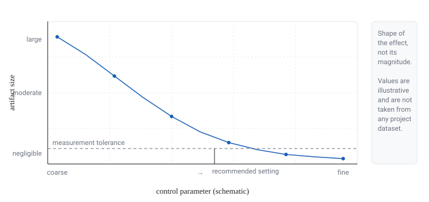

Project details
- Collaborators
- Written for [Lab or Group]; advisor [Advisor Name]. Additional collaborators available upon request.
- Timeline
- [Month Year] – [Month Year]
- Status
- Completed
- Role
- [Role] — investigation, numerical experiments, and write-up.
- Research area
- Numerical methodology for [Research Area].
Links: [Summary available upon request] | [Slides available upon request]
Research question
During [Measurements of Observable], results at a particular setting were repeatedly offset from the trend seen elsewhere. The question was narrow but consequential: is this a physical effect, or an artifact of how the numerical procedure handles [Numerical Detail]? If it is an artifact, how does its size depend on [Control Parameter], and at what point does it become negligible?
Methods
- Reproduced the offset on a controlled test problem where the expected answer is known analytically.
- Swept [Control Parameter] and recorded the offset systematically, holding every other choice fixed.
- Compared two independent implementations of the same step to separate implementation error from method error.
- Derived a practical rule for choosing the setting at which the artifact falls below the target tolerance.
Tools
- [Python] for the controlled experiments and the sweep driver.
- [NumPy] for the reference implementation used as a cross-check.
- [Matplotlib] for the diagnostic figures in the internal note.
- [LaTeX] for the written note and its equations.
My contribution
- Recognized the pattern in the existing measurements and formulated it as a testable numerical question.
- Built the controlled test problem and ran the parameter sweep.
- Wrote the internal note, including the practical rule for choosing the setting.
- Applied the rule retroactively to check whether earlier analyses were affected.
Results (high level)
The offset is numerical rather than physical: its size decreases predictably as [Control Parameter] is tightened, and it becomes smaller than the measurement uncertainty beyond a threshold that the note states explicitly. Earlier analyses in the group that used settings below that threshold were re-checked; the note is now the group's reference for this choice. [Result summary]
What I can share now. The question, the diagnostic strategy, and the qualitative conclusion — together with synthetic figures that show the shape of the effect without reproducing unpublished numbers. The full note is available upon request.
Figures

Technical note
The written note includes the derivation and the recommended threshold. The PDF below is a placeholder that states the same thing.
Download technical note (PDF) Placeholder file — content available upon request